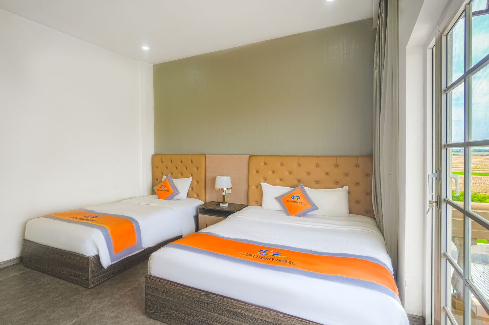
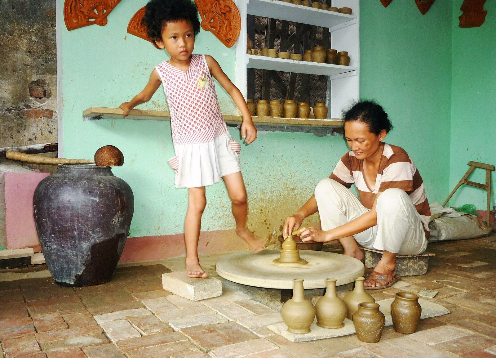

Tiếng Việt
Tiếng Việt English
English 한국어
한국어 中文
中文 Русский
Русский Deutsch
Deutsch
Đi du lịch cùng con nhỏ luôn đi kèm nhiều nỗi lo: con có chịu được nắng không, ăn uống có hợp không, khách sạn có chỗ cho con chơi không. Tin vui là Hội An rất thân thiện với trẻ em. Thành phố nhỏ, nhịp sống chậm, nhiều hoạt động ngoài trời và đồ ăn dễ ăn. Bài viết này tổng hợp kinh nghiệm thực tế từ những gia đình đã nghỉ tại CGP Luxury Hotel, giúp bạn chuẩn bị cho một kỳ nghỉ mà cả bố mẹ lẫn các con đều thấy vui.
Vì sao Hội An hợp với gia đình?
Khoảng cách ngắn
Phố cổ, làng quê và biển đều nằm gần nhau. Từ CGP, đi phố cổ khoảng 1 km, ra biển An Bàng khoảng 3 km. Trẻ không phải ngồi xe lâu.
Nhịp sống chậm
Khu phố cổ hạn chế xe cộ vào nhiều khung giờ, đường phố nhỏ và an toàn hơn để cả nhà đi bộ.
Nhiều hoạt động ngoài trời
Ngồi thuyền thúng, làm gốm, trồng rau, thả đèn hoa đăng, tắm biển. Những trải nghiệm này đều rất hấp dẫn với trẻ em.
Đồ ăn dễ ăn
Cơm gà, bánh mì, mì Quảng, trái cây nhiệt đới đều là những món trẻ dễ làm quen, ít cay nếu bạn dặn trước.
Thời điểm nên đi
Với gia đình có trẻ nhỏ, thời tiết là yếu tố quan trọng nhất. Hội An có hai mùa rõ rệt: mùa khô và mùa mưa.
| Thời gian | Thời tiết | Đánh giá cho gia đình |
|---|---|---|
| Tháng 2 đến tháng 4 | Mát mẻ, ít mưa, nắng nhẹ | Lý tưởng nhất, trẻ vui chơi ngoài trời thoải mái |
| Tháng 5 đến tháng 8 | Nắng nóng, có ngày trên 35°C | Phù hợp kỳ nghỉ hè, nên chơi buổi sáng sớm và chiều muộn |
| Tháng 9 đến tháng 12 | Mùa mưa, tháng 10 và 11 có thể ngập | Cân nhắc kỹ, nên linh hoạt lịch trình |
| Tháng 12 đến tháng 1 | Se lạnh, mưa phùn | Dễ chịu nếu mang đủ áo ấm |
Kỳ nghỉ hèNếu đi vào tháng 6 đến tháng 8, hãy lên lịch tham quan vào buổi sáng sớm và chiều muộn. Buổi trưa, cả nhà về khách sạn nghỉ ngơi và bơi ở hồ bơi để tránh nắng gắt.
Chọn phòng cho cả nhà
Phòng nghỉ là "căn cứ" của cả gia đình trong suốt chuyến đi, nên hãy chọn kỹ. Tại CGP Luxury Hotel, các phòng đều có diện tích từ 35 đến 40 m², rộng rãi hơn nhiều khách sạn trong khu vực.
Deluxe Double phòng 501: lựa chọn số một cho gia đình 3 người
Phòng 501 có một giường đôi và một giường đơn, đầu giường bọc nệm màu cam đất ấm áp. Cửa kính mở ra ban công lan can kiểu Pháp, phía xa là cánh đồng lúa xanh. Buổi sáng, các bé có thể đứng ở ban công ngắm cò bay và trâu ăn cỏ. Tủ dài, TV và khu pha trà giúp cả nhà sinh hoạt thoải mái.


Phòng có sofa giường cho gia đình đông hơn
Phòng 500 hạng King Suite Balcony có giường King và sofa giường rộng, phù hợp khi bố mẹ đi cùng một bé nhỏ cần chỗ nằm riêng. Gia đình đông người hơn có thể đặt hai phòng gần nhau. Hãy ghi chú khi đặt phòng để khách sạn sắp xếp.
Phòng tầng trệt gần hồ bơi
Phòng 101 và 102 mở cửa ra hiên gỗ cạnh hồ bơi, rất tiện cho gia đình có trẻ mê bơi. Tuy nhiên, bố mẹ cần luôn để mắt đến con vì cửa phòng mở thẳng ra hồ.
An toàn hồ bơiTrẻ em luôn cần có người lớn đi cùng khi xuống hồ bơi. Hãy mang theo phao tay hoặc áo phao cho bé nếu con chưa biết bơi.
Hoạt động trẻ em sẽ thích
Bơi lội tại khách sạn
Hồ bơi ngoài trời của CGP được nhiều bé xem là "điểm tham quan" yêu thích nhất của cả chuyến đi. Hồ lát gạch xanh dương nằm giữa sân trong, bao quanh bởi sàn gỗ và ghế mây. Hồ bơi miễn phí cho mọi khách lưu trú.


Ngồi thuyền thúng ở rừng dừa nước
Rừng dừa nước Bảy Mẫu ở Cẩm Thanh là nơi trẻ em sẽ cười không ngớt. Người lái thuyền thúng thường biểu diễn xoay thúng, câu cua và làm đồ chơi từ lá dừa tặng các bé. Nhớ cho bé mặc áo phao đầy đủ.
 Ảnh: Chester Ho chesterho / Wikimedia Commons, CC0
Ảnh: Chester Ho chesterho / Wikimedia Commons, CC0
Làm gốm ở làng gốm Thanh Hà
Làng gốm Thanh Hà có lịch sử hàng trăm năm. Ở đây, trẻ em được ngồi bên bàn xoay, tự tay nặn một chiếc cốc hay một con vật nhỏ bằng đất sét. Đây là món quà lưu niệm ý nghĩa mà bé tự làm.

Ảnh: LÊ TẤN LỘC / Wikimedia Commons, CC BY-SA 3.0Làm nông dân một ngày ở Trà Quế
Ở làng rau Trà Quế, các gia đình có thể cùng nhau cuốc đất, gieo hạt và tưới rau bằng gáo đôi. Sau đó cả nhà cùng nấu một món ăn đơn giản từ rau vừa hái. Trẻ em thành phố thường rất thích trải nghiệm này.
Thả đèn hoa đăng trên sông Hoài
Buổi tối, cả nhà cùng ngồi thuyền trên sông Hoài và thả một chiếc đèn hoa đăng. Ánh đèn lồng lung linh hai bên bờ sông chắc chắn sẽ khiến các bé thích thú.
 Ảnh: lumoplank / Wikimedia Commons, CC0
Ảnh: lumoplank / Wikimedia Commons, CC0
Tắm biển An Bàng
Biển An Bàng cách khách sạn khoảng 3 km, bãi cát mịn và có nhiều quán có ghế dù. Nên cho bé tắm biển vào buổi sáng trước 10 giờ hoặc sau 15 giờ khi nắng dịu.
Gợi ý lịch trình 4 ngày
Lịch trình dưới đây được thiết kế theo nhịp sinh hoạt của trẻ nhỏ: buổi sáng đi chơi, buổi trưa nghỉ ngơi, buổi chiều hoạt động nhẹ.
- Ngày 1
Nhận phòng và làm quen
Nhận phòng từ 14:00, cả nhà bơi ở hồ bơi khách sạn, ăn tối nhẹ ở nhà hàng CGP và đi ngủ sớm để lấy sức.
- Ngày 2
Phố cổ và thả đèn hoa đăng
Buổi sáng tham quan Chùa Cầu và các nhà cổ khi trời còn mát. Trưa về khách sạn nghỉ. Chiều tối đi bộ phố cổ, thả đèn hoa đăng và ăn chè.
- Ngày 3
Thuyền thúng và biển
Buổi sáng đi rừng dừa Bảy Mẫu ngồi thuyền thúng. Trưa ăn hải sản. Chiều tắm biển An Bàng và về khách sạn ngắm hoàng hôn.
- Ngày 4
Làng gốm và trả phòng
Buổi sáng làm gốm ở Thanh Hà hoặc trồng rau ở Trà Quế. Về khách sạn bơi lần cuối và trả phòng trước 12:00.
Nếu muốn mọi thứ được chuẩn bị sẵn, gói Kỳ nghỉ gia đình 4 đêm của CGP được thiết kế dành riêng cho cả nhà, bao gồm phòng nghỉ và bữa sáng hằng ngày cùng các quyền lợi khác được ghi chi tiết trên trang gói.
Danh sách hành lý cho bé
- Quần áo: đồ cotton thoáng mát, mũ rộng vành, áo khoác mỏng cho buổi tối và áo mưa nếu đi vào mùa mưa.
- Đồ bơi: đồ bơi, kính bơi, phao tay hoặc áo phao cho bé chưa biết bơi.
- Chống nắng: kem chống nắng dành cho trẻ em, kính râm.
- Thuốc cơ bản: hạ sốt, men tiêu hóa, thuốc chống muỗi, băng dán cá nhân.
- Đồ ăn vặt quen thuộc: một ít bánh, sữa mà bé hay dùng để phòng khi bé chưa quen đồ ăn mới.
- Đồ chơi nhỏ: sách tranh, bút màu để bé chơi trong lúc chờ đồ ăn hay ngồi xe.
Cần hỗ trợ thêm?Nếu bạn cần cũi cho em bé hoặc có yêu cầu đặc biệt về bữa ăn của trẻ, hãy liên hệ lễ tân trước chuyến đi để khách sạn kiểm tra và chuẩn bị.
Câu hỏi thường gặp
Khách sạn có phòng cho gia đình 3 người không?
Có. Phòng 501 hạng Deluxe Double có một giường đôi và một giường đơn, rất hợp với gia đình có một con.
Hồ bơi có tính phí không?
Không. Hồ bơi ngoài trời miễn phí cho mọi khách lưu trú. Trẻ em cần có người lớn đi cùng.
Khách sạn có hỗ trợ đưa đón sân bay không?
Có. Dịch vụ đưa đón sân bay có thu phí, vui lòng đặt trước với lễ tân để khách sạn bố trí xe phù hợp với số người và hành lý.
Gói Kỳ nghỉ gia đình gồm những gì?
Gói gồm 4 đêm nghỉ và bữa sáng hằng ngày cùng các quyền lợi khác. Chi tiết đầy đủ có trên trang gói Kỳ nghỉ gia đình.
Kỳ nghỉ gia đình trọn vẹn tại Hội An
Phòng rộng, hồ bơi xanh mát và đội ngũ lễ tân 24/24 luôn sẵn sàng giúp cả nhà có những ngày nghỉ thật vui.